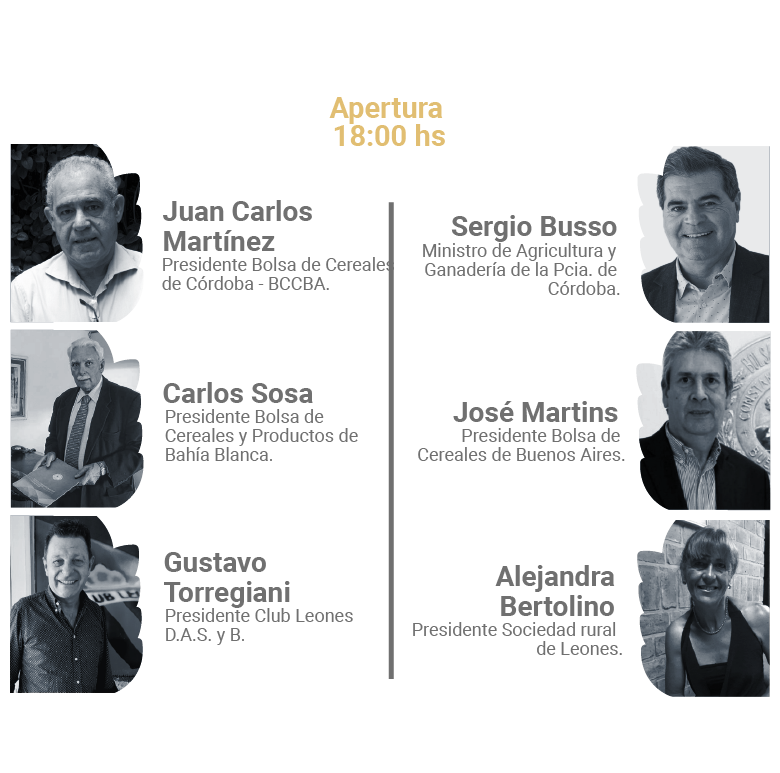

Sponsors

Paterns
Organizan e invitan

Organizadores Oficiales

Jueves 11 Febrero
Viernes 12 Febrero
Sábado 13 de febrero

La Fiesta Nacional del Trigo es una de las festividades más antiguas del país. Este mega evento que se realiza cada año desde 1947 es una oportunidad de festejo para toda la familia donde el trigo es protagonista.
Organizada en la localidad de Leones, Capital Nacional del Trigo.
Este encuentro luego se declaró Fiesta Nacional en 1956 y constituye una de las conmemoraciones más tradicionales a los productores de este reconocido cereal.
En cada edición, ofrece un marco propicio para desarrollar jornadas trigueras nacionales y jornadas técnicas. A su vez, se realizan concursos nacionales de muestras de trigo y el clásico desfile de carrozas, alegorías y maquinarias.
Por su parte, este evento incluye la elección y coronación de la Reina Nacional del Trigo. Además, sobre sus escenarios se despliegan shows musicales y espectáculos artísticos durante las diversas jornadas.
RECOMENDACIONES PARA EL STREAMING
Chequear que la conexión a internet sea estable.
Asegúrate que tus dispositivos estén cargados.
Busca un sitio comodo.
Prepárate para aprender y disfrutar.
Fiesta Nacional del Trigo
@CongresoTrigAR
@CongresoTrigAR